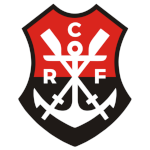

A fundação da regata do Flamengo remonta a 1895, quando o clube foi originalmente criado. O Flamengo começou suas atividades como um clube de regatas (daí o nome) e, inicialmente, não estava envolvido com o futebol. O objetivo era promover esportes aquáticos, como remo e natação. Foi nesse contexto que, em 1895, um grupo de jovens entusiastas fundou o clube, que, desde o início, adotou as cores vermelha e preta como suas cores oficiais.
O Flamengo logo se destacou nas competições de remo, e essas cores passaram a ser um símbolo da instituição. A regata do Flamengo, portanto, foi estabelecida em um período de grande entusiasmo pelo esporte, com o time competindo em provas de remo e conquistando títulos. As cores e o estilo da vestimenta (regata) com listras vermelhas e pretas foram sendo consolidadas como uma marca do clube e se perpetuaram no imaginário popular até hoje.
